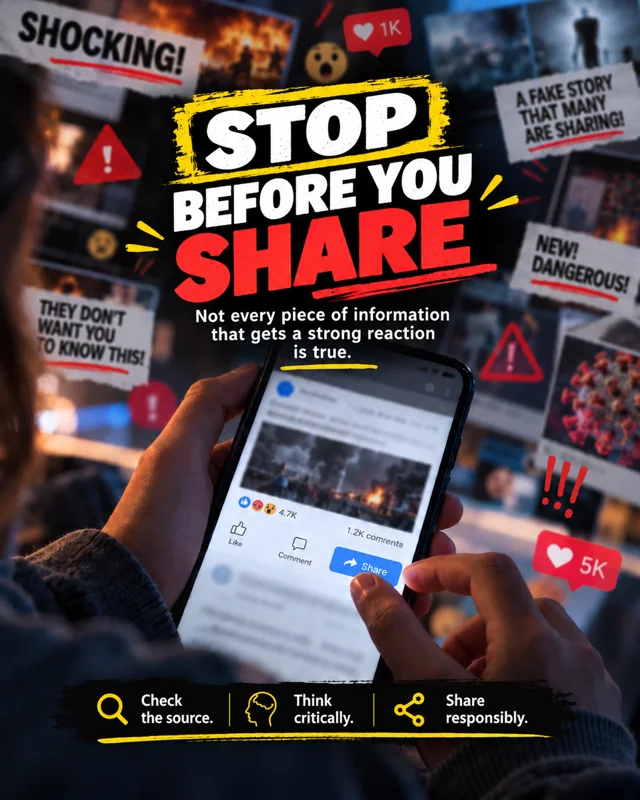
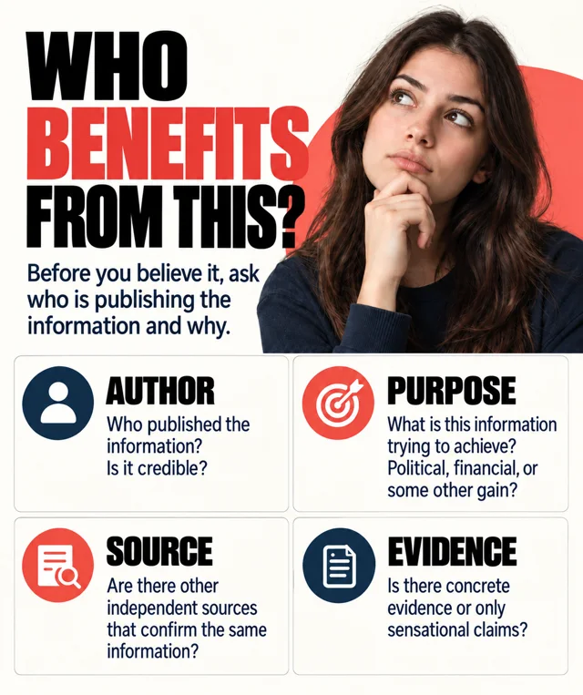
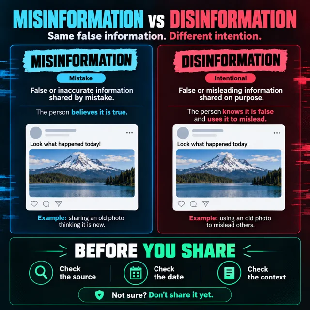
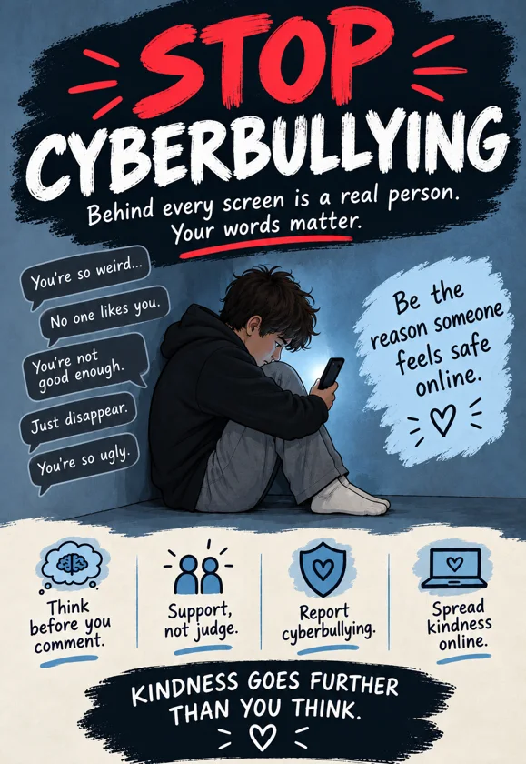

Before you believe.Before you share.
Learn to check information, understand AI and protect your data. All in one place, in your language.

Choose a topic.
Read in order or open the chapter you need.
Checking information
Popular ≠ verified.
Checking information means establishing the source, evidence and context of a claim before accepting or sharing it as fact.
SourceThe author and publisher.
EvidenceDocuments, data and verifiable sources.
ContextDate, location and the full content.
Misinformation
Inaccurate information shared without an intention to deceive.
Disinformation
False or manipulative information deliberately created or shared to mislead.
You cannot always establish someone’s intention from a single post. First check whether the claim is accurate; do not assume why someone shared it.
Five steps before you believe or share
- 1
Pause
Content that scares you, makes you angry or demands an immediate share deserves a check. Lots of likes do not prove that it is accurate.
- 2
Check the source
Open the original post. Look for the author, the publisher and evidence for the claim. Check the web address: fake sites can imitate familiar news outlets.
- 3
Check the date and context
Read beyond the headline. An old photo, a cropped video or a quote taken out of context can be presented as a new event. Check when and where the content was created.
- 4
Find independent confirmation
Check whether other reliable sources confirm the claim. Several accounts copying the same post are not independent confirmation. Where possible, find the original document or statement.
- 5
Share responsibly
If you cannot verify it, do not share it as a fact. If you have already shared inaccurate information, correct it and explain what was wrong.
Not sure? Don’t share it yet.
Algorithms and content selection
The algorithm selects. You verify.
Algorithms are systems that select and rank content. On social networks, they influence which posts, videos and advertisements appear in the feed.
Your reactions→Algorithm selection→Next content
This is a simplified view. Recommendations may also depend on other signals.
Recommendations may use your viewing, searches, likes and other reactions to choose what you see next. That selection does not confirm the content’s accuracy.
Find another perspective
For an important topic, leave the feed and open several reliable sources.
Choose who you follow
Review the accounts you follow and use “Not interested” where available.
Notice the habit
Decide when to close the app, instead of letting the next video make that decision.
AI and deepfake content
Realistic ≠ authentic.
AI can create and alter text, images, video and audio. A realistic appearance or familiar voice is not sufficient evidence of authenticity.
- Look for the original recording, post or statement.
- Check whether reliable sources confirm the event.
- An unusual appearance or sound can be a reason to check, but is not evidence of manipulation on its own.
Personal data and security
Your data. Your protection.
Phishing is deception through messages or pages that appear trustworthy in order to obtain passwords, sign-in codes or other data. Common signs include demands for urgent action, an unexpected prize and a link to an unfamiliar or imitation address. A familiar account can also be taken over.
- Do not enter a password or sign-in code through a link in a suspicious message.
- Check with the person through another known contact.
- If you need to check something on the platform, open its app or official site directly.
Three things you can fix today
- A long, different password for every account.
- Two-factor authentication (2FA), where available.
- Reviewed permissions for location, contacts, camera and microphone.
Cyberbullying and support
Save evidence. Get support.
Cyberbullying is repeated harassment through digital platforms intended to frighten, humiliate or hurt someone. It can include insults, threats, spreading lies, posting humiliating photos or impersonation. A single serious incident also deserves reporting and support.
Don’t respond with insults
Do not continue the argument or forward the hurtful content.
Keep evidence
Save messages, links and screenshots so you can explain what happened.
Block and report
Use the platform’s blocking and reporting options.
Tell a trusted adult
Talk to a parent, teacher or school psychologist. If you feel unsafe, ask for help immediately.
Creating responsible content
Clear message. Verified source.
Responsible digital content has a clear message, verified claims and respect for the people it depicts. A poster, post or short video should help the reader understand something or take a concrete step.
Choose one message
Checking before sharing, recognising deliberate manipulation or supporting someone facing cyberbullying.
Create a poster, post or short video
Include a clear title, an image that explains the message, a verified fact with its source and a concrete tip. Label AI-generated content.
Explain and share
Show your classmates: why this message, and how did you check it? Coordinate with a teacher before using a school noticeboard or account.
Posters for school
Knowledge is worth sharing.
Five posters with clear messages about checking information and responsible behaviour. Open or download them for your school noticeboard.

Check the source
Download PNG

Who benefits from this?
Download PNG

Misinformation and disinformation
Download PNG
